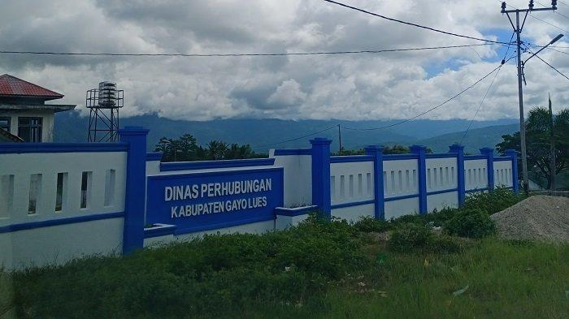

Struktur Organisasi, Tugas dan Fungsi

Dinas Perhubungan dibentuk berdasarkan Qanun Kabupaten Gayo Lues Nomor 10 Tahun 2011
tentang Perubahan Ketiga atas Qanun Kabupaten Gayo Lues Nomor 5 Tahun 2007 tentang Pembentukan Susunan
Organisasi Dinas-Dinas Daerah Kabupaten Gayo Lues (Lembaran Daerah Kabupaten Gayo Lues tahun 2011 Nomor 43)
dan Peraturan Bupati Gayo Lues Nomor 54 Tahun 2016 tentang Rincian Tugas Pokok dan Fungsi Pemangku Jabatan
Struktural Dinas-Dinas Kabupaten Gayo Lues.
Dinas Perhubungan dipimpin oleh seorang Kepala Dinas yang berada dibawah dan bertanggung jawab kepada Bupati melalui
Sekretaris Daerah. Berikut Susunan Organisasi Dinas Perhubungan Kabupaten Gayo Lues terdiri dari :
Bidang Sekretariat
Bidang LLAJ
Bidang Prasarana
Bidang Sekretariat
Sekretariat mempunyai fungsi :
1. Penyusunan program dan anggaran meliputi penyusunan Renstra, Renja dan RKA,
2. Penyelenggaraan administrasi perkantoran yang meliputi ketatausahaan, kepegawaian,
rumah tangga, hukum, organisasi dan hubungan masyarakat,
3. Penyelenggaraan urusan keuangan dan kelengkapan yang meliputi perbendaharaan,
pendapatan, pengelolaan barang milik daerah, tindak lanjut laporan hasil pemeriksaan,
monitoring dan pelaporan.
🔹 Sub. Bagian Umum, Kepegawaian dan Pelaporan
mempunyai tugas :
a. Menghimpun peraturan perundang-undangan, mengolah data dan informasi,
petunjuk teknis yang berhubungan dengan ketatausahaan, rumah tangga, perlengkapan
dan kepegawaian sebagai pedoman kerja...
🔹 Sub. Bagian Perencanaan, Keuangan dan Aset
mempunyai tugas :
a. Menginventarisasi permasalahan yang berhubungan dengan perencanaan, keuangan, monitoring,
evaluasi dan pelaporan serta menyiapkan bahan untuk pemecahan masalah...
Bidang Lalu Lintas dan Angkutan Jalan
Bidang Lalu Lintas dan Angkutan mempunyai fungsi :
1. Perumusan dan pelaksanaan kebijakan dan program kerja bidang lalu lintas dan angkutan,
2. Pelaksanaan koordinasi dan kerja sama baik dinas maupun dengan lembaga/instansi terkait dibidang
pengendalian operasional, pembinaan, pengawasan dan rekayasa lalu lintas,
3. Pelaksanaan kajian teknis terkait lalu lintas seperti Analisis Dampak Lalu Lintas (ANDALALIN).
🔹 Seksi Lalu Lintas
mempunyai tugas :
a. Melaksanakan kegiatan manajemen lalu lintas yang meliputi pengaturan, rekayasa lalu lintas, dan pengawasan lalu lintas...
🔹 Seksi Angkutan
mempunyai tugas :
a. Merumuskan rencana trayek angkutan pedesaan, barang dan khusus...
🔹 Seksi Pengujian Sarana
mempunyai tugas :
a. Melaksanakan penyiapan bahan fasilitasi teknis kendaraan yang meliputi persyaratan teknis dan standarisasi konstruksi kendaraan bermotor...
Bidang Sarana dan Keselamatan
Bidang Sarana dan Keselamatan mempunyai fungsi :
1. Pelaksanaan pembangunan dan pemeliharaan sarana dan prasarana perhubungan,
2. Pelaksanaan koordinasi dan kerja sama baik dinas maupun dengan lembaga/instansi terkait bidang keselamatan sarana dan prasarana perhubungan,
3. Pelaksanaan kajian teknis terkait sarana dan prasarana perhubungan.
🔹 Seksi Prasarana
mempunyai tugas :
a. Mengumpulkan, mengolah data dan melaksanakan kajian teknis terkait sarana dan prasarana perhubungan...
🔹 Seksi Keselamatan
mempunyai tugas :
a. Menyusun dan menyiapkan petunjuk teknis keselamatan dan kebijakan transportasi...
🔹 Seksi Pengembangan
mempunyai tugas :
a. Melakukan penyiapan bahan perumusan dan pelaksanaan kebijakan serta evaluasi dan pelaporan di bidang pemaduan moda,
teknologi perhubungan dan lingkungan perhubungan...